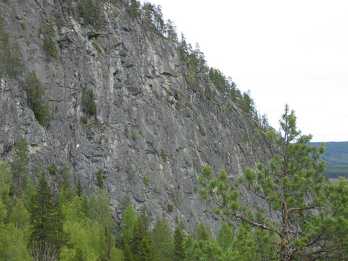

GPS: 63.3925981229732,18.4136009216308
Rösås är en mäktig klippa på 120m som har en stark trad-karaktär.
Från Örnsköldsvik så åker man söderut längs E4an ca 3km kilometer. Sväng av E4an åt höger, skyltat 348 mot Åsele. Efter 14 km svänger man höger in på Molidenvägen. Då man kommer in i byn är det skyltat mot Rösåsberget. Passera en fotbollsplan och en gammal järnvägsstaion. Parkera på vändplatsen under berget.
Rösås mossar igen. Endast ett fåtal leder är i klätterbar form. Dessa leder går idag bra att klättra:
Vilka fler? Någon som vet?
Kategori:trad Kategori:vertikalt Kategori:sva
PDF-förare kan laddas ner på
Kategori:Ångermanland
Copyright (C) Permission is granted to copy, distribute and/or modify this document under the terms of the GNU Free Documentation License, Version 1.3